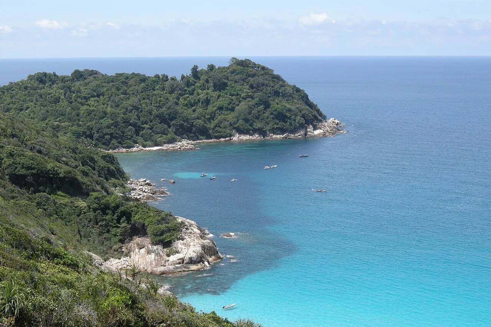

Îles Perhentian
Terengganu, Malaisie · snorkeling, plongée

Îles de jungle et de sable blanc, avec tortues et requins à pointe noire dans le lagon. Fermées pendant la mousson.
- Lieu
- Terengganu, Malaisie
- Niveau
- Débutant
- Activités
- snorkeling, plongée
- Type d'eau
- Mer / océan
- Coordonnées
- 5.92, 102.73 (position approximative du secteur)
Dangers à connaître
- Bateaux-taxis.
- Corail fragile.
Le conseil d'Ocean Buddy
La saison va de mars à octobre ; hors saison, beaucoup de lieux ferment.
Ouvrir dans Ocean Buddy Télécharger sur l'App Store
Source : Fiche Ocean Buddy · septembre 2026 · à vérifier localement.